Оптика. Практичний курс
Частина I Геометрична оптика та фотометрія
1 Геометрична оптика
§ 1.1 Застосування основних законів
Геометрична оптика — розділ оптики, в якому вивчаються закони поширення світла в прозорих середовищах на основі уявлень про світловий промінь. Світловий промінь — це лінія вздовж якої поширюється світло.
В геометричній оптиці застосовують правила знаків для відрізків і кутів, що дозволяють користуватись формулами геометричної оптики для будь-яких випадків взаємного розташування елементів оптичної системи:
-
• за додатній напрямок розповсюдження світла прийнято напрямок зліва направо;
-
• додатними вважаються відрізки, якщо вони відраховуються вздовж напрямку розповсюдження світла;
-
• радіуси кривизни поверхонь відраховуються від вершин поверхонь;
-
• відрізки, перпендикулярні до оптичної осі, вважаються додатними, якщо вони знаходяться над віссю, і від’ємними – під віссю;
-
• кут вважається додатнім відносно осі відліку, якщо відлік від осі ведеться за годинниковою стрілкою.
Закони геометричної оптики
Закон прямолінійного розповсюдження світла: в однорідному ізотропному середовищі світло розповсюджуються вздовж прямої лінії.
Закон незалежного розповсюдження світлових променів: світлові промені розповсюджуються незалежно один від одного, так наче інших променів не існує.
Закон відбиття: промінь, що падає на поверхню (границю розділу оптичних середовищ), нормаль до поверхні в точці падіння та відбитий від поверхні промінь знаходяться в одній площині. Кут падіння \(\epsilon _1\) дорівнює куту відбиття \(\epsilon '_1\) (рис. 1.1).
Закон заломлення: промінь, що падає на поверхню розділу двох середовищ з показниками заломлення \(n_1\) і \(n_2\), нормаль до поверхні в точці падіння та заломлений промінь знаходяться в одній площині, кути падіння і заломлення зв’язані співвідношенням (закон Снелліуса) (рис. 1.1):
\(\seteqnumber{0}{1.}{0}\)\begin{equation} \label {eq:Snell} \frac {\sin \epsilon _1}{\sin \epsilon '_2} = \frac {n_2}{n_1} = \frac {v_1}{v_2}, \end{equation}
де \(\epsilon '_1\), \(\epsilon '_2\) — мають однакові знаки; \(n_1\), \(n_2\) — абсолютні показники заломлення першого й другого середовищ відповідно; \(v_1\), \(v_2\) — фазові швидкості світла в цих середовищах.
Абсолютний показник заломлення (або просто показник заломлення) є основною оптичною характеристикою середовища (матеріалу):
\(\seteqnumber{0}{1.}{1}\)\begin{equation} \label {eq:n} n = \frac {c}{v}, \end{equation}
де \(c = 3\cdot 10^{10}\) см/с — швидкість світла в вакуумі; \(v\) — фазова швидкість світла в даному середовищі, яка залежить від довжини хвилі (частоти) світла.
Явище повного внутрішнього відбиття1 спостерігається при падінні світла з оптично щільнішого середовища на границю з оптично менш щільним середовищем (\(n_1 > n_2\)), коли промінь не переходить в друге середовище, а відбивається від границі розділу середовищ (рис. 1.1в).
Граничний кут повного внутрішнього відбиття, який отримують з умови \(\epsilon '_2 = 90^\circ \), визначається виразом:
\(\seteqnumber{0}{1.}{2}\)\begin{equation} \label {eq:total reflection} \epsilon _\text {гр} = \arcsin \left (\frac {n_2}{n_1}\right ). \end{equation}
Заломлюючі призми і клини
Призма — оптична деталь, обмежена двома заломлюючими непаралельними площинами (1.2а). Головним перерізом призми називається переріз площиною, що перпендикулярна до ребра двогранного кута між площинами.
Заломлюючий кут призми \(\theta \) — це кут між площинами призми у її головному перерізі. Кут вважається додатнім, якщо вершина напрямлена нагору.
Кут відхилення призми \(\sigma \) — кут між падаючим променем і відхиленим. За початок відліку кута відхилення вибирається напрямок падаючого променя.
Мінімальний кут відхилення променя призмою (рис. 1.2б) при симетричному проходженні його всередині призми:(\(|\epsilon _1| = |\epsilon _4|\), \(|\epsilon _2| = |\epsilon _3|\) (рис. 1.2б). Зазвичай, оптичні прилади, що містять тригранну призму, налаштовуються на мінімальний кут відхилення променя.
Клином називають призму з невеликим заломлюючим кутом (рис. 1.3). Цей кут зазвичай становить менше \(3^\circ \).
Основні співвідношення для призми
Сума кутів заломлення на першій грані \(-\epsilon _2\) і падіння на другу грань \(\epsilon _3\)дорівнює заломлюючому куту призми \(\theta \):
\(\seteqnumber{0}{1.}{3}\)\begin{equation} \theta = -\epsilon _2 + \epsilon _3. \end{equation}
Кут відхилення променя монохроматичного світла:
\(\seteqnumber{0}{1.}{4}\)\begin{equation} \label {eq:sigma_initial} \sigma = \epsilon _4 - \epsilon _1 - \theta \end{equation}
\(\seteqnumber{0}{1.}{5}\)\begin{equation} \label {eq:sigma1}\tag {\theequation \text {а}} \sigma = \arcsin \left ( \frac {n}{n_0}\sin \left (\theta + \arcsin \left (\frac {n_0}{n}\sin \epsilon _1 \right ) \right ) \right ) - \epsilon _1 - \theta \end{equation}
\(\seteqnumber{0}{1.}{5}\)\begin{equation} \label {eq:sigma2}\tag {\theequation \text {б}} \sigma = \arcsin \left ( \frac {n}{n_0}\sin (\theta + \epsilon _2) \right ) - \arcsin \left ( \frac {n}{n_0}\sin \epsilon _2 \right ) - \theta . \end{equation}
Мінімальний кут відхилення променя \(\sigma _0\):
\(\seteqnumber{0}{1.}{5}\)\begin{equation} \label {eq:sigma0} \sigma _0 = 2\arcsin \left ( \frac {n}{n_0}\sin \frac {\theta }{2} \right ) - \theta . \end{equation}
\(\seteqnumber{0}{1.}{6}\)\begin{equation} \label {eq:sigma01} n_0 \sin \frac {\sigma _0 + \theta }2 = n\sin \frac {\theta }{2}. \tag {1.6а} \end{equation}
Кут відхилення променя клином (у випадку малих заломлюючих кутів), що знаходиться у повітрі (\(n_0 = 1\)) з (1.5б) дає:
\(\seteqnumber{0}{1.}{6}\)\begin{equation} \label {eq:klin} \sigma = \theta (n - 1). \end{equation}
1.1.1 Приклади розв’язування задач
Приклад 1. Виразити у векторній формі закон відбиття світла через одиничні вектори: нормалі \(\vect {N}\) в точці падіння й падаючого променя \(\vect {r}_0\). Скалярний вираз закону відбиття вважається відомим.
Розв’язок.
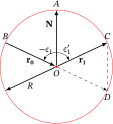
Проведемо коло одиничного радіуса (\(R = 1\)) із центром у точці падіння \(O\) променя на границю відбиття. Тоді одиничні вектори \(\vect {N}\) та \(\vect {r}_0\) при деякому куті падіння \(\epsilon _1\), можуть бути представлені векторними відрізками \(\vect {OA}\) та \(\vect {BO}\) відповідно. Одиничний вектор \(\vect {r}_1\) відбитого променя може бути представлений відрізком \(\vect {OC}\), що виходить відповідно до закону відбиття із точки \(O\) під кутом \(\epsilon '_1 = |\epsilon _1|\) до нормалі.
Виразимо одиничний вектор \(\vect {r}_1\) через вектори \(\vect {N}\) й \(\vect {r}_0\), скориставшись положенням, що будь-який вектор \(\vect {c}\) на площині можна виразити через два заданих непаралельних вектори \(\vect {a}\) й \(\vect {b}\), що лежать у тій же площині, лінійною залежністю:
\(\seteqnumber{0}{1.}{7}\)\begin{equation*} \vect {c} = \mu \vect {a} + \nu \vect {b}. \end{equation*}
Перемістимо вектор \(\vect {r}_0\) уздовж його напрямку в положення \(|\vect {OD}|\) й проведемо вектор \(\vect {DC}\). З векторного трикутника \(ODC\) треба \(\vect {OC} = \vect {OD} + \vect {DC} \). По побудові \(\vect {OC} = \vect {r}_1\), \(\vect {OD} = \vect {r}_0\), \(\vect {DC} \parallel \vect {N}\), \(\vect {DC} = \nu \vect {N} \), тоді
\(\seteqnumber{0}{1.}{7}\)\begin{equation} \label {eq:r1} \vect {r}_1 = \vect {r}_0 + \nu \vect {N}. \end{equation}
Із трикутника \(ODC\) визначимо коефіцієнт \(\nu \) із урахуванням рівності \(|\vect {N}| = |{OD}| = |{OC}| = R = 1\):
\(\seteqnumber{0}{1.}{8}\)\begin{equation} \label {eq:nu} \nu = \frac {|{DC}|}{|\vect {N}|} = \frac {2R\cos \epsilon '_1}{R} = 2\cos \epsilon '_1 = 2\cos \epsilon _1. \end{equation}
По визначенню скалярного добутку двох векторів, коли проекція одного з них спрямована протилежно іншому, маємо:
\(\seteqnumber{0}{1.}{9}\)\begin{equation*} (\vect {r}_0 \cdot \vect {N}) = |\vect {r}_0| |\vect {N}| (-\cos \epsilon _1) = -\cos \epsilon _1, \end{equation*}
тобто
\(\seteqnumber{0}{1.}{9}\)\begin{equation*} \cos \epsilon _1 = - (\vect {r}_0 \cdot \vect {N}) \end{equation*}
Тоді з врахуванням (1.8), остаточно одержуємо з (1.9) вираз:
\(\seteqnumber{0}{1.}{9}\)\begin{equation*} \vect {r}_1 = \vect {r}_0 - 2 (\vect {r}_0 \cdot \vect {N}) \vect {N}. \end{equation*}
Цей вираз являє собою векторну форму закону відбиття світла.
Приклад 2. Користуючись законом відбиття, геометрично довести справедливість принципу Ферма.
Розв’язок.
Нехай деякий промінь, який виходить з точки \(A\), після відбиття від плоского дзеркала проходить через точку \(B\). Покажемо, що оптична довжина шляху променя, який відбився від дзеркала, менше оптичної довжини будь-якого іншого шляху від точки \(A\) до дзеркала, а потім до точки \(B\).
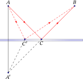
Дійсно, із закону відбиття випливає, що дзеркальне зображення \(A'\) точки \(A\) лежить на продовженні відбитого променя \(CB\) і є його перетином з перпендикуляром до дзеркала, проведеним з точки \(A\). Тому \(A'C=AC\), звідки маємо: оптична довжина променя \(ACB=A'CBВ\). Очевидно, що будь-який інший шлях \(AC'B = A'C'B\) є ламаною, яка завжди довша за прямий відрізок \(A'B\) , що і треба було довести.
Приклад 3. Промінь світла падає під кутом \(30^\circ \) на плоскопаралельну скляну пластину (\(n = 1,5\)) товщиною \(10\) см. Визначити зсув \(h\) променя, що пройшов крізь пластину.
Розв’язок.
Оскільки пластина перебуває в однорідному середовищі (зверху й знизу її повітря \(n_1 = n_3 = 1\)), то на виході із пластини заломлений промінь піде паралельно падаючому променю (див. рис.). Зсув променя \(h = |BD|\). Знаки всіх кутів приймаємо додатніми
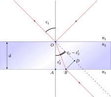
Із прямокутного трикутника \(ODB\) маємо \(h = OB \sin (\epsilon _1 - \epsilon '_2)\), де кут заломлення визначається законом Снеліуса (1.1). З трикутника \(OAB\) знаходимо
\[ |OB| = \frac {d}{\cos \epsilon '_2}, \]
одержуємо
\[ h = d \frac {\sin (\epsilon _1 - \epsilon '_2)}{\cos \epsilon '_2}. \]
Обчислюємо: \(\epsilon '_2 = 19,4712^\circ \); \(\cos \epsilon '_2 = 0,942\); \(\epsilon _1 - \epsilon '_2 = 30^\circ - 19,4712^\circ = 10,5288^\circ \); \(\sin (\epsilon _1 - \epsilon '_2) = 0,1827\); \(h = 0,97\) см.
Таким чином, скляна пластина товщиною \(5\) см, поставлена під кутом \(30^\circ \), зміщує промінь майже на \(1\) см, не змінюючи його напрямку.
Примітки:
-
1. можна вирішити обернену задачу — визначити товщину \(d\) пластини, необхідну для досягнення заданого зсуву \(h\) оптичної осі системи при відомому куті падіння \(\epsilon _1\);
-
2. зміною кута нахилу \(\epsilon _1\) плоскопаралельної пластини постійної товщини \(d\) можна плавно паралельно зміщувати оптичну вісь системи в потрібному діапазоні.
Приклад 4. На вхідну грань скляної призми із заломлюючим кутом \(40^\circ \) нормально падає промінь монохроматичного світла (\(n = 1,48\)). Визначити кут відхилення променя призмою й мінімальний кут відхилення променя призмою.
Розв’язок.
а) Визначимо кут відхилення \(\sigma \).
Промінь падає нормально на вхідну грань і не заломлюється на ній. Промінь заломлюється тільки на вихідній грані призми, відхиляючись далі від нормалі (див. рис.).
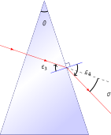
Визначимо кут відхилення \(\sigma \). Скористаємося спрощеною формулою:
\[ \sigma = \epsilon _4 - \epsilon _1 - \theta \]
Оскільки \(\epsilon _1 = 0\), то й \(\epsilon _2 = 0\), а кут падіння променя на вихідну грань \(\epsilon _3 = \theta \), як і видно із схеми. Тоді з закону заломлення на вихідній грані
\[ n\sin \epsilon _3 = n_0 \sin \epsilon _4, \]
маємо, що
\[ \epsilon _4 = \arcsin \left ( \frac {n}{n_0}\sin \theta \right ). \]
Тоді \(\epsilon _4 = \arcsin \left ( \frac {1,48}{1} \sin 40^\circ \right ) = 72,0501^\circ \), а \(\sigma = 72,0501^\circ - 40^\circ = 32^\circ 3' 4''\).
При \(\epsilon _1 = \epsilon _2 = 0\) загальні формули для кута відхилення (1.5а) і (1.5б) дають той же результат:
\[ \sigma = \arcsin \left ( \frac {n}{n_0} \sin \theta \right ) - \theta . \]
б) Визначимо мінімальний кут відхилення променя призмою \(\sigma _0\).
У цьому випадку \(|\epsilon _1| = \epsilon _4\), а \(|\epsilon _2| = \epsilon _3\) як показано на схемі (див. рис. 1.2б). По формулі (1.6) обчислюємо
\[ \sigma _0 = 2\arcsin \left ( \frac {n}{n_0}\sin \frac {\theta }{2}\right ) - \theta = 60,8202^\circ - 40^\circ = 20^\circ 49'15''. \]
Таким чином, мінімальний кут відхилення \(\sigma _0\) при симетричному проходженні променя через призму в \(1,5\) рази менше, ніж кут відхилення при нормальному падінні променя на вхідну грань призми.
1.1.2 Контрольні запитання і задачі для самостійного розв’язку
-
1.7. Довести побудовою, що система двох плоских дзеркал ( кутове дзеркало) з кутом \(\alpha \) між ними завжди повертає вхідний промінь на кут \(\delta = 2\alpha \).
[1] Примітка: Одночасний поворот такого кутового дзеркала навколо осі, перпендикулярної площині креслення (така вісь перпендикулярна будь-якій площині падіння), не змінює кут відхилення променя. Наприклад, кутове дзеркало з \(\alpha = 45^\circ \) завжди відхиляє промінь на \(90^\circ \)
-
1.10. Фіолетовий промінь падає на плоскопаралельну пластину зі скла марки ТК8 (\(n = 1,628\)) і виходить із неї паралельно первісному напрямку. Якою повинна бути товщина пластинки, щоб зсув променя склав \(5\) мм при кутах падіння: а) \(30^\circ \); б) \(45^\circ \); в) \(60^\circ \)? [відповідь]
-
1.11. На плоскопаралельну скляну пластинку зі скла марки ТФ9 товщиною \(1\) см падає промінь світла жовтого кольору (\(n = 1,6137\)) під кутом \(60^\circ \). Частина світла відбивається від верхньої поверхні, а частина, заломлюючись, проходить у пластинку, відбивається від її нижньої поверхні й, заломлюючись удруге на верхній поверхні, виходить у повітря паралельно першому відбитому променю. Визначити: а) відстань між цими променями; б) цю ж відстань для пластинки зі скла марки ТФ7 (\(n = 1,73\)). [відповідь]
-
1.12. Записати у векторній формі закон заломлення світла на границі двох прозорих середовищ (\(n_1\) і \(n_2\)), якщо нормаль у точці падіння характеризується одиничним вектором \(\vect {N}\), спрямованим від середовища \(2\) у середовище \(1\), а падаючий промінь — одиничним вектором \(\vect {r}_0\). Скалярний вираз закону заломлення передбачається відомим.
Вказівка. Побудувати коло одиничного радіуса із центром у точці падіння променя, провести одиничні вектори \(\vect {N}\) й \(\vect {r}_0\) і виразити через них одиничний вектор заломленого променя \(\vect {r}_2\). [відповідь]
-
1.13. Зі скляного куба з посрібленими гранями зрізали кут, отримавши таким чином тригранну піраміду ( кутиковий відбивач). Промінь світла потрапляє через основу в цю піраміду і, послідовно відбиваючись від трьох взаємно перпендикулярних граней, виходить назовні. Показати, що вихідний промінь міняє свій напрямок на протилежний.
Вказівка. Скористатись векторною формою закону відбиття.
-
1.14. Пучок паралельних променів падає на товсту скляну пластину під кутом \(\epsilon = 60^\circ \), і заломлюючись переходить у скло. Ширина а пучка в повітрі дорівнює \(10\) см. Визначити ширину b пучка в склі. [відповідь]
-
1.15. На дні посудини, наповненої водою до висоти 10 см, перебуває точкове джерело світла, над яким на поверхні води плаває непрозорий диск. Центр диска перебуває над джерелом світла. Визначити найменший радіус диска, при якому жоден промінь від джерела світла не виходить на поверхню води. Як зміниться цей радіус, якщо воду замінити скипидаром (\(n = 1,483\))? [відповідь]
-
1.16. У якому напрямку до лінії обрію плавець, який пірнув у воду, бачить сонце, що заходить?
Вказівка. Схему побудувати у зворотному ході променів. [відповідь]
-
1.17. Світловий промінь падає на однорідну кулю з показником заломлення \(n\). Чи може всередині кулі відбуватись повне внутрішнє відбиття цього заломленого променя? [відповідь]
-
1.18. На плоскопаралельну скляну пластинку під кутом \(\phi \) падає пучок світла шириною \(a\), який має дві спектральні компоненти. Показники заломлення скла для цих компонентів різні і дорівнюють \(n_1\) і \(n_2\). Знайти найменшу товщину пластинки \(h_{\min }\), для якої на виході світло буде розповсюджуватись у вигляді двох окремих пучків різного кольору. [відповідь]
-
1.19. Під яким кутом до нормалі катета прямокутної рівнобедреної скляної призми (\(n = 1,54\)) повинен падати промінь світла, щоб після заломлення він ішов по гіпотенузі?
Вказівка. Вирішити завдання у зворотному ході променів. [відповідь]
-
1.20. При якому найбільшому куті падіння променя на скляну призму (\(n = 1,5\)) із заломлюючим кутом \(45^\circ \) на виході променя з нею ще не наступає повне внутрішнє відбиття? (Див. вказівку 1.19). [відповідь]
-
1.21. При якому заломлюючому куті скляної призми \(n\) кут найменшого відхилення її променя дорівнює заломлюючому куту призми? [відповідь]
-
1.22. Рівностороння скляна призма дає кут найменшого відхилення променя в повітрі \(37^\circ \). Який кут найменшого відхилення того ж променя дасть ця призма у воді? [відповідь]
-
1.23. Визначити кут падіння променя монохроматичного світла на вхідну грань скляної призми (\(n = 1,6\)) із заломлюючим кутом \(45^\circ \), щоб на вихідній грані спостерігалося повне внутрішнє відбиття. [відповідь]
-
1.24. Промінь білого світла падає на бічну поверхню рівнобедреної призми із заломлюючим кутом \(45^\circ \) під таким кутом, що червоний промінь виходить із неї перпендикулярно до другої грані. Визначити кути відхилення червоного й фіолетового променів від первісного напрямку, якщо показники заломлення скла призми для них відповідно рівні \(1,37\) і \(1,42\). [відповідь]
-
1.25. Заломлюючий кут \(\theta \) призми, що має форму гострого клина, дорівнює \(2^\circ \). Визначити кут найменшого відхилення \(\sigma _0\) променя при проходженні через призму, якщо показник заломлення \(n\) скла призми дорівнює \(1,6\). [відповідь]
-
1.26. Для обернення зображення часто використовують так звану призму Дове — зрізану прямокутну рівнобічну призму.
[1] Знайти довжину основи призми, якщо її висота дорівнює \(2,11\) см, а показник заломлення \(1,41\). Призма повинна створювати пучок світла з максимальним перерізом, а внутрішній кут відбиття повинний задовольняти умові повного внутрішнього відбиття.
§ 1.2 Центровані оптичні системи. Оптичні прилади
1.2.1 Оптика параксіальних променів
У найпоширеніших типах оптичних систем поверхні, на яких заломлюються і відбиваються світлові промені — є поверхнями обертання. Якщо центри кривизни цих поверхонь лежать на одній осі, то такі системи називають центрованими оптичними системами, а вісь — оптичною віссю. Параксіальними називаються промені, які виходять з предметної точки на оптичній осі під малими кутами і зустрічають оптичну систему на малій висоті (рис. 1.4).
Співвідношення для параксіальних променів
Для параксіальних променів, які заломлюються на сферичній границі розділу оптичних середовищ справджується співвідношення, яке носить назву інваріанта Аббе:
\(\seteqnumber{0}{1.}{9}\)\begin{equation} \label {eq:Abbe_Inv} n'\left (\frac {1}{S'} - \frac {1}{R}\right ) = n\left (\frac {1}{S} - \frac {1}{R}\right ). \end{equation}
Часто зручно користуватись формулою Аббе
\(\seteqnumber{0}{1.}{10}\)\begin{equation} \label {eq:Abbe_Inv2} \frac {n'}{S'} - \frac {n}{S} = \frac {n' - n}{R}. \tag {\theequation \text {а}} \end{equation}
Якщо \(-S \to \infty \), то паралельні оптичній осі промені зберуться в задньому фокусі \(F'\) Тоді \(S' = f'\) — задня фокусна відстань. З (1.10а) маємо для однієї заломлюючої поверхні
\(\seteqnumber{0}{1.}{10}\)\begin{equation} \label {eq:OptSilaOdniei} \Phi = \frac {n'}{f'} = \frac {n' - n}{R}. \end{equation}
де \(\Phi \) – оптична сила, яка вимірюється в діоптріях. Оптичну силу в \(1\) дптр має лінза з фокусною відстанню в повітрі, що дорівнює \(1\) м.
З рис. 1.4 легко також отримати співвідношення, справедливе для параксіальної області, яке носить назву інваріанта Лагранжа-Гельмгольца:
\(\seteqnumber{0}{1.}{11}\)\begin{equation} \label {eq:Lagrang-Helmholtz} ny\sigma = n'y'\sigma '. \end{equation}
Для сферичної відбиваючої поверхні (\(n' = -n\)) інваріант буде мати вигляд:
\(\seteqnumber{0}{1.}{12}\)\begin{equation} y\sigma = - y'\sigma '. \end{equation}
1.2.2 Кардинальні елементи оптичної системи
Кардинальними елементами оптичної системи є фокуси, фокальні площини, головні точки й головні площини (рис. 1.5).
Головні площини — пара оптично спряжених перпендикулярних до оптичної осі площин, у яких лінійне збільшення дорівнює одиниці. Спряжені між собою точки перетину \(H\) і \(H'\) головних площин з оптичною віссю називаються головними точками.
Точка \(F'\), спряжена з нескінченно далекою точкою простору предметів, що розташована на оптичній осі — задній фокус оптичної системи. Усі промені, паралельні до оптичної осі, після проходження через оптичну систему, перетинаються у задньому фокусі \(F'\).
Площина, що перпендикулярна до оптичної осі та проходить через точку \(F'\) називається задньою фокальною площиною. В задній фокальній площині сходяться похилі паралельні жмутки променів. Аналогічно визначається передня фокальна площина.
Точка \(F\), що пов’язана з нескінченно далекою точкою оптичної осі простору зображень, називається переднім фокусом. Всі промені, що проходять у просторі предметів через передній фокус \(F\), після виходу з ідеальної оптичної системи стають паралельними оптичній осі. Відрізки \(-f\) і \(f'\), що відраховуються від головних точок \(H\) і \(H'\) до фокусів \(F\) та \(F'\), називаються передньою та з адньою фокусною відстанню.
Фокусні відстані співвідносяться як:
\(\seteqnumber{0}{1.}{13}\)\begin{equation} -\frac {f}{f'} = \frac {n_1}{n_{p+1}} \end{equation}
де \(n_1\) и \(n_{p+1}\) показники заломлення середовищ простору предметів і зображень відповідно.
1.2.3 Лінзи та дзеркала
Лінза — оптична деталь, обмежена двома заломлюючими, як правило, осесиметричними центрованими поверхнями.
За видом заломлюючих поверхонь лінзи діляться на сферичні, циліндричні тощо. Ми будемо розглядати тільки сферичні лінзи, які в параксіальній області забезпечують гомоцентричність пучка променів.
За знаком оптичної сили (здатністю збирати паралельний пучок випромінювання в дійсну або уявну точку) лінзи бувають двох типів: збиральні (рис. 1.6а) і розсіювальні (рис. 1.6б).
Співвідношення для тонкої лінзи
Використовуючи інваріант Аббе (1.10) можна вивести співвідношення для тонкої лінзи та сферичного дзеркала. Оптична сила тонкої лінзи визначається як сума оптичних сил її заломлюючих поверхонь. Якщо лінза, показник заломлення матеріалу якої \(n\), знаходиться в середовищі з показником заломлення \(n'\), то її оптична сила:
\(\seteqnumber{0}{1.}{14}\)\begin{equation} \label {eq:Phi_of_thin_lens} \Phi = \Phi _1 + \Phi _2 = \frac {n - n'}{R_1} + \frac {n' - n}{R_2} = (n - n') \left ( \frac {1}{R_1} - \frac {1}{R_2}\right ), \end{equation}
де \(R_1\) і \(R_2\) — радіуси кривизни першої і другої заломлюючих поверхонь, відповідно.
Формулу сферичного дзеркала отримуємо з умови \(n' = -n\):
\(\seteqnumber{0}{1.}{15}\)\begin{equation} \label {eq:formula_spherical_mirror} \frac {1}{S'} + \frac {1}{S} = \frac {2}{R}. \tag {\theequation \text {а}} \end{equation}
Фокусна відстань сферичного дзеркала визначається як
\(\seteqnumber{0}{1.}{15}\)\begin{equation} \label {eq:focus_spherical_mirror} f' = \frac {R}{2}. \end{equation}
На відміну від тонкої лінзи, товста лінза додатково характеризується осьовою товщиною \(d\).
Положення кардинальних точок і площин в товстих лінзах наведені на рис. 1.7.
Основні співвідношення для товстих лінз
Оптична сила товстої лінзи (товсту лінзу можна розглядати як двокомпонентну оптичну систему. ):
\(\seteqnumber{0}{1.}{16}\)\begin{equation} \label {eq:Phi_of_thick_lens} \Phi = \Phi _1 + \Phi _2 - \frac {d}{n}\Phi _1 \Phi _2, \end{equation}
або
\(\seteqnumber{0}{1.}{17}\)\begin{equation} \label {eq:Phi_of_thick_lens2} \Phi = \frac {n'}{f'} = (n - n')\left ( \frac {1}{R_1} - \frac {1}{R_2} \right ) + \frac {d(n' - n)^2}{nR_1R_2}. \tag {\theequation \text {а}} \end{equation}
де \(d\) — товщина лінзи (або відстань між компонентами для двокомпонентної системи).
У випадку \(d = 0\), формула (1.17) переходить у формулу для оптичної сили тонкої лінзи (1.15)
Для розрахунку положення кардинальних елементів товстої лінзи в повітрі користуються співвідношеннями:
-
1. фокусні відстані:
\(\seteqnumber{0}{1.}{17}\)\begin{equation} \label {eq:f=-f'} f = -f'; \end{equation}
-
2. фокальні відрізки:
\(\seteqnumber{0}{1.}{18}\)\begin{align} S_{F} = - f'\left ( 1 + \frac {n - 1}{n} \frac {d}{R_2} \right ), \label {eq:S_F} \\ S'_{F'} = f'\left ( 1 - \frac {n - 1}{n} \frac {d}{R_1} \right ); \label {eq:S'_F'} \end{align}
-
3. положення головних точок:
\(\seteqnumber{0}{1.}{20}\)\begin{align} S_{H} = \frac {d}{n}\frac {\Phi _2}{\Phi } = f \frac {n - 1}{n} \frac {d}{R_2}, \label {eq:S_H} \\ S'_{H'} = - \frac {d}{n}\frac {\Phi _1}{\Phi } = - f' \frac {n - 1}{n} \frac {d}{R_1}; \label {eq:S'_H'} \end{align}
-
4. відстань між головними площинами:
\(\seteqnumber{0}{1.}{22}\)\begin{equation} \label {eq:Delta_HH'} \Delta _{HH'} = d \left [1 - f' \frac {n - 1}{n} \left ( \frac {1}{R_1} - \frac {1}{R_2} \right ) \right ]. \end{equation}
1.2.4 Побудова ходу променів в оптичній системі
Для побудови ходу довільного променя в оптичній системі, заданій кардинальними елементами, використовують так звані допоміжні промені (рис. 1.8). Їх будують з міркувань створення паралельних із заданим (шуканим) жмутків променів на вході або виході оптичної системи. Для оптичної системи в однорідному середовищі (\(n = n'\)) таких променів може бути чотири (рис. 1.8).
-
1. паралельний до заданого промінь \(1\), що входить через передній фокус \(F\), виходить паралельно до оптичної осі;
-
2. паралельний до оптичної ості промінь \(2\), який виходить з тієї ж точки передьої фокальної площини, що і заданий, та проходить через задній фокус \(F'\) на виході;
-
3. паралельний до заданого (шуканого) промінь \(3\), що входить через передню точку \(H\) і виходить з задньої головної точки \(H'\) під тим же кутом (тільки для систем в однорідному середовищі \(n = n'\));
-
4. промінь \(4\), який виходить з тієї ж точки передньої фокальної площини, що і заданий, та входить через передню головну точку \(H\) і виходить з задньої головної точки \(H'\) під тим же кутом (тільки для систем в однорідному середовищі \(n = n'\)).
На рис. 1.8а (ліворуч) показана побудова ходу довільного (шуканого) променя (позначеного червоним) у додатній системі (\(\Phi > 0\)) у випадку \(n = n'\) з використанням одного з двох допоміжних променів (позначених синім і зеленим), хід яких є відомим. Кожен з цих променів буде паралельним до шуканого на вході: промінь \(2\) проходить через передній фокус, а промінь \(3\) — входить в систему в передній головній точці, що дозволяє знайти точку, в якій сходиться жмуток паралельних променів в задній фокальній площині, а відтак і шуканий промінь, на виході системи.
На рис. 1.8а (праворуч) показано застосування ще двох можливих допоміжних променів, які будують такими, що виходять з тієї ж точки передньої фокальної площини, що і шуканий промінь, а відтак знаходять напрямок паралельного жмутка променів на виході системи.
У від’ємній системі (\(\Phi < 0\)) у випадку \(n = n' \) використовують аналогічні промені (рис. 1.8б). Побудова ускладнюється через обернене положення фокальних площин: передня знаходиться за оптичною системою, а задня — перед.
1.2.5 Властивості ідеальної оптичної системи
Ідеальною оптичною системою називають оптичну систему, яка відображає точку предмета точкою й зберігає заданий масштаб зображення 2. Основні формули для спряжених точок і відрізків можна отримати з рис. 1.9.
Основні формули для розрахунку ідеальної оптичної системи
Формула Ньютона:
\(\seteqnumber{0}{1.}{23}\)\begin{equation} zz' = ff'. \end{equation}
Формула Гауса:
\(\seteqnumber{0}{1.}{24}\)\begin{equation} \label {eq:Gauss} \frac {f'}{a'} + \frac {f}{a} = 1. \end{equation}
Інакше, цей вираз має вигляд формули відрізків
\(\seteqnumber{0}{1.}{25}\)\begin{equation} \label {eq:Gauss_a} \frac {n'}{a'} - \frac {n}{a} = \frac {n'}{f'}, \tag {1.25a} \end{equation}
де \(n\), \(n'\) — показники заломлення середовищ перед і за оптичною системою, відповідно.
Для оптичної системи в повітрі
\(\seteqnumber{0}{1.}{25}\)\begin{equation} \label {eq:Gauss_b} \frac {1}{a'} - \frac {1}{a} = \frac {1}{f'}, \tag {1.25б} \end{equation}
Визначення фокусної відстані, положення предмета \(a\) і зображення \(a'\) при відомому лінійному збільшенні системи \(\beta \) за умови \(n = n'\):
\(\seteqnumber{0}{1.}{25}\)\begin{equation} \label {eq:thick_opt_sys} f' = - \frac {L - \Delta _{HH'}}{(1 - \beta )^2}\beta , \quad a' = f'(1- \beta ), \quad a = f'\frac {1- \beta }{\beta }. \end{equation}
ля тонкої оптичної системи, коли \(\Delta _{HH'} = 0\):
\(\seteqnumber{0}{1.}{26}\)\begin{equation} \label {eq:thin_opt_sys} f' = - \frac {\beta L}{(1 - \beta )^2}, \quad a' = \frac {\beta L}{1- \beta }, \quad a = - \frac {L}{1 - \beta }. \tag {1.26a} \end{equation}
Лінійне збільшення (поперечне):
\(\seteqnumber{0}{1.}{26}\)\begin{equation} \label {eq:lens_linear_increas} \beta = -\frac {y'}{y} = -\frac {f}{z} = -\frac {z'}{f'} = - \frac {fa'}{f'a} = \frac {na'}{n'a}. \end{equation}
Кутове збільшення:
\(\seteqnumber{0}{1.}{27}\)\begin{equation} \gamma = \frac {\tg \sigma '_p}{\tg \sigma _1} = \frac {a}{a'} = \frac {n}{n'} \frac 1\beta . \end{equation}
Поздовжнє збільшення:
\(\seteqnumber{0}{1.}{28}\)\begin{equation} \alpha = \frac {d z'}{d z} = - \frac {z'}{z} = - \frac {ff'}{z^2} = \frac {n'}{n} \beta ^2. \end{equation}
Зв’язок між збільшеннями:
\(\seteqnumber{0}{1.}{29}\)\begin{equation} \beta \gamma = \frac {n'}{n}, \quad \alpha \gamma = \beta . \end{equation}
2 У реальних оптичних системах властивості ідеальної системи можуть співпадати лише в параксіальній ділянці.
1.2.6 Оптичні інструменти
Оптичні прилади, які використовуються для роботи з оком, характеризуються видимим збільшенням:
\(\seteqnumber{0}{1.}{30}\)\begin{equation} \label {eq:apparent increase} \Gamma = \frac {\tg w'}{\tg w}, \end{equation}
де \(w\) — кут, під яким видно предмет неозброєним оком, \(w'\) — кут, під яким спостерігають створене оптичним приладом зображення предмету.
Найпоширеніші оптичні прилади для роботи з оком: лупа, мікроскоп, зорові труби, біноклі. Поняття видимого збільшення застосовують і у випадку багатоетапного створення зображення, яке розглядається оком (мікроскоп, зорова труба тощо).
Лупа – збиральна лінза або система лінз, призначена для візуального спостереження за предметом, який розташовано в передній фокальній площині або за нею.
Якщо розглядуваний предмет розташований у передній фокальній площині лупи, то від будь-якої точки предмета в око спостерігача потрапляють пучки паралельних променів. У цьому випадку око спостерігача акомодовано на нескінченність (рис. 1.10), видиме збільшення визначається як:
\(\seteqnumber{0}{1.}{31}\)\begin{equation} \Gamma = \frac {250\ \text {мм}}{f'}, \end{equation}
де \(250\) мм — відстань найкращого зору.
В загальному випадку, коли предмет знаходиться на відстані \(z\) від переднього фокуса, а зіниця ока на деякій відстані \(z_0\) від заднього фокуса (рис. 1.11), збільшення лупи дорівнює:
\(\seteqnumber{0}{1.}{32}\)\begin{equation} \Gamma = \frac {L}{f'}\left (1 + \frac {z'_0}{z' - z'_0}\right ). \end{equation}
Якщо око розташовано впритул до лінзи, а відстань від ока до зображення дорівнює відстані найкращого зору 250 мм, то матиме місце акомодація ока на відстань найкращого зору, а видиме збільшення буде:
\(\seteqnumber{0}{1.}{33}\)\begin{equation*} \Gamma = 1 + \frac {250\ \text {мм}}{f'}. \end{equation*}
Мікроскоп, призначений для спостереження близько розташованих предметів, на відміну від лупи, має двокаскадну схему збільшення (рис. 1.12). Першим каскадом є об’єктив, другим — окуляр. Об’єктив створює збільшене дійсне зображення \(l'\) предмета \(l\) в передній фокальній площині окуляра, за допомогою якого це зображення розглядається як в лупу.
Основними характеристиками мікроскопа є видиме збільшення \(\Gamma \), лінійне поле зору \(2y\), розмір вихідної зіниці \(D'\).
Об’єктив мікроскопа створює дійсне, збільшене та обернене зображення.
Основні співвідношення для мікроскопа
Видиме збільшення окуляра:
\(\seteqnumber{0}{1.}{33}\)\begin{equation} \Gamma _\text {ок} = \frac {250\ \text {мм}}{f'_\text {ок}}. \end{equation}
Видиме збільшення мікроскопа:
\(\seteqnumber{0}{1.}{34}\)\begin{equation} \label {eq:microscope_apparent_increase} \Gamma = \beta _\text {об} \Gamma _\text {ок}. \end{equation}
де \(\Delta _F\) – оптичний інтервал, який називається оптичною довжиною тубуса мікроскопа.
Розглядаючи мікроскоп як лупу, можна визначити приведену фокусну відстань мікроскопа як
\(\seteqnumber{0}{1.}{35}\)\begin{equation} f'_\text {мікроскоп} = - \frac {f'_\text {об}f'_\text {ок}}{\Delta _F}, \end{equation}
та видиме збільшення мікроскопа як
\(\seteqnumber{0}{1.}{36}\)\begin{equation} \Gamma _\text {мікроскоп} = \frac {250\ \text {мм}}{f'_\text {мікроскоп}}. \end{equation}
У випадку, коли при спостереженні око акомодовано на відстань найкращого зору, зображення предмета \(l''\) буде знаходитись перед окуляром, як показано на рис. 1.13.
Телескопічними системами називаються такі, які перетворюють паралельні пучки променів, які входять в систему, на паралельні — на виході системи. Зорові труби — це телескопічні системи для роботи з оком, призначені для спостереження за віддаленими предметами. Прості зорові труби складаються з об’єктива і окуляра. Зорові труби систем Кеплера і Галілея зображені на рис. 1.14.
Якщо на систему падають паралельні промені, то зазвичай використовують дволінзові склеєні об’єктиви. Дволінзовий об’єктив складається з однієї збиральної та однієї розсіювальної лінзи (це відображено на рис. 1.14).
Довжина зорової труби
\(\seteqnumber{0}{1.}{37}\)\begin{equation} L = f'_\text {об} + f_\text {ок}. \end{equation}
Детально хід променів в системі Кеплера показаний на рис. 1.15
Основні співвідношення для телескопа
Видиме збільшення зорової труби
\(\seteqnumber{0}{1.}{38}\)\begin{equation} \Gamma = \frac {\tg w'}{\tg w} = - \frac {f'_\text {об}}{f'_\text {ок}} = \frac {D}{D'}, \end{equation}
де \(w\) — кутовий розмір предмета (або кутове положення точкового предмета), \(w'\) — кутовий розмір зображення, \(2w\) — кутове поле зору системи, \(D\) і \(D'\) — діаметри вхідної і вихідної зіниць.
1.2.7 Приклади розв’язування задач
Приклад 5. Побудувати хід променя \(3\), який проходить крізь систему, що складається з \(p\) поверхонь \(n_1 = n_p\).
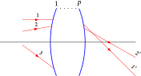
Розв’язок.
Для побудови променя \(3\) необхідно знати положення кардинальних точок заданої оптичної системи. Для знаходження їх положень скористаємось променями \(1\) та \(2\). Промінь \(1\) в просторі предметів проходить паралельно до оптичної вісі, отже він перетинає оптичну вісь в точні заднього фокуса. На продовженні променя \(1\) на вході та виході з системи знаходиться задня головна площина (див. рис.). Відстань між \(HH'\) та \(F'\) є задня фокусна відстань.
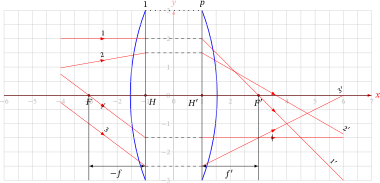
Для того, щоб знайти положення передньої головної площини, скористаємось променем \(2\). Точка перетину цього променя з передньою головною площиною повинна знаходитись на однаковій висоті відносно оптичної вісі з точкою перетину цього променя з задньою головною площиною. Продовжуючи промінь \(2\) на виході з оптичної системи до перетину з задньою головною площиною і провівши лінію з точки перетину паралельно оптичній вісі, знаходимо перетин цієї лінії променем \(2\) на вході в систему. Місце їх перетину вказує положення передньої головної площини і точки \(H\).
Оскільки за умовою \(n_1 = n_p\) , то \(f = - f'\). Використовуючи цю рівність, знаходимо положення точки \(F\). Знаючи положення кардинальних точок оптичної системи, знаходимо хід променя \(3\).
На рис. показано повне рішення даної задачі. При побудові ходу променя \(3\) був використаний паралельний даному додатковий промінь, який виходить з переднього фокуса \(F\).
Приклад 6. Дві тонкі симетричні лінзи, збиральна і розсіювальна, мають однакові радіуси кривизни поверхонь \(R = 10\) см. Показник заломлення скла розсіювальної лінзи \(n_1 = 1,73\), а збиральної — \(n_2 = 1,53\). Лінзи склали впритул і занурили у воду. Яка фокусна відстань цієї системи у воді?
Розв’язок.
Знайдемо оптичні сили кожної з лінз. Для розсіювальної лінзи радіус кривизни першої поверхні від’ємний, а другої — додатній, для збиральної — навпаки.
Тому
\(\seteqnumber{0}{1.}{39}\)\begin{equation*} \Phi _1 = (n_1 - n_\text {води})\left (-\frac {1}{R} - \frac {1}{R}\right ) = -\frac {2(n_1 - n_\text {води})}{R} = - 8\ \text {дптр}. \end{equation*}
\(\seteqnumber{0}{1.}{39}\)\begin{equation*} \Phi _2 = (n_2 - n_\text {води})\left (\frac {1}{R} + \frac {1}{R}\right ) = \frac {2(n_2 - n_\text {води})}{R} = 4\ \text {дптр}. \end{equation*}
Так як складена система також тонка, то
\(\seteqnumber{0}{1.}{39}\)\begin{equation*} \Phi = \Phi _1 + \Phi _2 = -4\ \text {дптр} \end{equation*}
Фокусну відстань системи у воді знайдемо з співвідношення
\(\seteqnumber{0}{1.}{39}\)\begin{equation*} \Phi = \frac {n_\text {води}}{f'}. \end{equation*}
Тоді
\(\seteqnumber{0}{1.}{39}\)\begin{equation*} f' = \frac {n_\text {води}}{\Phi } = \frac {1.33}{4} = 0,3325\ \text {м} = 332,5 \ \text {мм}. \end{equation*}
Приклад 7. Знайти задню фокусну відстань оптичної системи, що складається з двох нескінченно тонких компонентів.
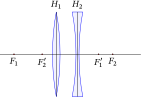
Розв’язок.
Для визначення задньої фокусної відстані даної оптичної системи необхідно знайти положення задніх кардинальних точок (\(H'\) та \(F'\) ) системи. Точка заднього фокуса \(F'\) знаходиться на перетині з оптичною віссю променя, який входить в оптичну систему паралельно оптичній осі. З перетину продовження вказаного променя на вході і виході оптичної системи визначають положення задньої головної площини. Її перетин з оптичною віссю дає положення точки \(H'\).
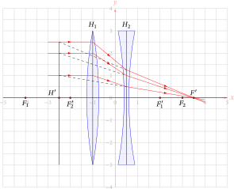
З порівняння фокусних відстаней компонентів, зображених на рис., випливає, що компоненти знаходяться в однорідному середовищі і для побудови хода променя можна скористатися будь-яким з відомих додаткових променів.
Приклад 8. Захисне скло теплопеленгатора являє собою лінзу з концентричними сферичними поверхнями \(R_1 = 90\) мм и \(R_2 = 80\) мм, виготовлену із ситалу 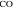
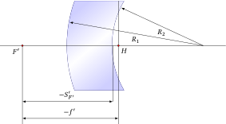
Розв’язок.
Очевидно, товщина такої лінзи:
\(\seteqnumber{0}{1.}{39}\)\begin{equation*} d = R_1 – R_2 = 10 \ \text {мм}. \end{equation*}
Користуючись формулою (1.17), знаходимо:
\(\seteqnumber{0}{1.}{39}\)\begin{equation*} f' = -2,02 \cdot 10^3\ \text {мм}. \end{equation*}
Задній фокальний відрізок з (1.20):
\(\seteqnumber{0}{1.}{39}\)\begin{equation*} S'_{F'} = -1,94 \cdot 10^3 \ \text {мм}. \end{equation*}
Приклад 9. Предмет знаходиться впритул до скляної кулі діаметром \(50\) мм, виготовленої із скла КФ4. Визначити положення зображення та його збільшення
Розв’язок.
Розрахункову схему зображено на рис.
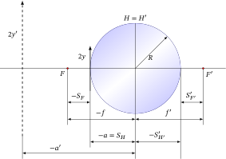
Користуючись формулами (1.17) – (1.23), визначимо оптичні параметри лінзи-кулі (\(R_1 = - R_2 = D/2\); \(d = D\)), взявши для спрощення обчислень \(n=1,5\).
Маємо:
\(\seteqnumber{0}{1.}{39}\)\begin{align*} f' = \frac {Dn}{4(n - 1)} = 37,5\ \text {мм}, \\ S'_{F'} = f \frac {2 - n}{n} = 12,5\ \text {мм}, \\ S_{F} = - S'_{F'} = -12,5\ \text {мм}, \\ S'_{H'} = -f'\frac {2(n - 1)}{n} = -\frac {D}{2} = - 25\ \text {мм}, \\ S_H = - S'_{H'} = 25\ \text {мм}. \end{align*}
З рис. видно, що положення предмета \(2y\) відносно передньої головної площини \(a = -S_H = -25\) мм. Користуючись формулою (1.25a), знаходимо положення зображення \(2y'\) відносно задньої головної площини. Необхідно відмітити, що в скляній кулі головні площини співпадають і проходять через її центр. Положення зображення знаходимо з формули Гауса (1.25a):
\(\seteqnumber{0}{1.}{39}\)\begin{equation*} a' = \frac {af'}{a + f'} = -79\ \text {мм}. \end{equation*}
Тоді збільшення системи:
\(\seteqnumber{0}{1.}{39}\)\begin{equation*} \beta = \frac {a'}{a} = 3,16. \end{equation*}
Приклад 10. Визначити величину сферичної аберації, яку вносить плоскопаралельна пластина товщиною \(d = 10\) мм, виготовлена із скла ТК 23, якщо її помістили в жмут променів, які сходяться під кутом \(2\epsilon _1 = 60^\circ \). Сферичну аберацію плоскопаралельної пластини визначають за формулою:
\(\seteqnumber{0}{1.}{39}\)\begin{equation*} \Delta S' = \Delta \epsilon _1 - \Delta _0, \end{equation*}
де \(\Delta \epsilon _1\) — зміщення променя при куті падіння \(\epsilon _1\), \(\Delta _0\) — зміщення променя при кутах \(\epsilon _1 \ll 1\) рад (в параксіальних променях).
Розв’язок.
Визначимо зміщення променя плоскопаралельною пластиною \(\Delta _0\) для малих кутів \(\epsilon _1 \ll 1\). В цьому випадку \(\sin \epsilon _1 \approx \epsilon _1\), \(\cos \epsilon _1 \approx 1\). Тоді:
\(\seteqnumber{0}{1.}{39}\)\begin{equation*} \Delta _0 = d\left (1 - \frac 1n \right ) = d \frac {n - 1}{n}. \end{equation*}
Використаємо формулу для аберації з умови задачі:
\(\seteqnumber{0}{1.}{39}\)\begin{equation*} \Delta S' = d\left (1 - \frac {\cos \epsilon _1}{\sqrt {n^2 - \sin ^2\epsilon _1}}\right ) - d \frac {n - 1}{n} = \frac {d}{n} \left ( 1 - \sqrt {\frac {1 - \sin ^2\epsilon _1}{1 - \frac {1}{n^2}\sin ^2\epsilon _1}}\right ). \end{equation*}
Якщо \(d = 10\) мм; \(\epsilon _1 = 30^\circ \); \(n = 1,59\), то \(\Delta S' = 0,55\) мм.
Приклад 11. Визначити фокусну відстань об’єктива \(f'\) та взаємне розташування екрана осцилографа, об’єктива і фотоплівки розміром \(24\times 36\) мм при фотографуванні осцилограм з екрану розміром \(120\times 180\) мм. Відстань між екраном і фотоплівкою повинна дорівнювати \(L = 400\) мм. Об’єктив вважається тонким.
Розв’язок.
Визначимо спочатку збільшення системи, яка утворює дійсне обернене зображення (оскільки сторони плівки і екрану подібні, не має значення, за якою стороною виконувати розрахунок):
\(\seteqnumber{0}{1.}{39}\)\begin{equation*} \beta = \frac {y'}{y} = -0,2. \end{equation*}
Оскільки об’єктив тонкий, тобто \(\Delta _{HH'} = 0 \), то скориставшись формулами (1.26a), знаходимо:
\(\seteqnumber{0}{1.}{39}\)\begin{align*} \text {фокусна відстань об'єктива:} & \quad f' = 55,6\ \text {мм}, \\ \text {положення фотоплівки відносно об’єктива:} & \quad a' = 66,7\ \text {мм}, \\ \text {положення екрану осцилографа відносно об’єктива:} & \quad a = -333,3\ \text {мм}. \end{align*}
Приклад 12. Обчислити, на якій відстані від екрану глядач не відчує погіршення якості зображення при поздовжніх зміщеннях в \(5\) мкм плівки в кадровому вікні, якщо кінопроекція здійснюється за допомогою об’єктива з фокусною відстанню \(f' = 30\) мм і діаметром \(15\) мм, з кадра висотою \(8\) мм на екран висотою \(2\) м. Граничним кутом розділення ока вважатимемо величину в одну кутову хвилину.
Розв’язок.
Розглянемо розрахункову схему, на рис.
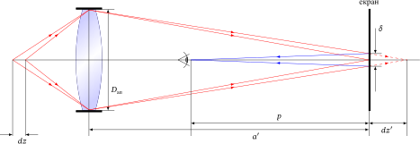
При зміщеннях \(dz\) кадра вздовж осі \(z\) на екрані замість зображення точки буде пляма діаметром \(\delta \).
Якщо глядач побачить цю пляму під кутом, меншим кутової границі розділення ока \(\psi _\text {ока} = 1' = 0,00029\) рад ін не помітить погіршення якості зображення. Тоді мінімальна відстань, на якій глядач не помітить погіршення якості зображення, дорівнює \(p = \frac {\delta }{\psi _\text {ока}}\). Діаметр \(\delta \) визначимо з подібних трикутників:
\(\seteqnumber{0}{1.}{39}\)\begin{equation*} \frac {\delta }{D} = \frac {dz'}{a' + dz'},\ \text {звідки}\ \delta = D\frac {dz'}{a' + dz'}. \end{equation*}
Зміщення зображення визначимо з повздовжнього збільшення
\(\seteqnumber{0}{1.}{39}\)\begin{equation*} \frac {dz'}{dz} = \alpha = \beta ^2,\ \text {звідки}\ dz' = \beta ^2 dz. \end{equation*}
За умови задачі знаходимо
\(\seteqnumber{0}{1.}{39}\)\begin{equation*} \beta = \frac {y'}{y} = -\frac {2000}{8} = -250. \end{equation*}
Тоді \(dz' = 312,5\) мм. Відстань \(a'\) від об’єктива до екрана визначимо за формулою (1.26):
\(\seteqnumber{0}{1.}{39}\)\begin{equation*} a ' = f' (1 - \beta ) = 7530\ \text {мм}. \end{equation*}
З урахуванням знайдених значень \(dz'\) та \(a'\) знаходимо діаметр \(\delta = 0.6\) мм. Тоді відстань \(p\):
\(\seteqnumber{0}{1.}{39}\)\begin{equation*} p = \frac {\delta }{\psi _\text {ока}} = \frac {0.6}{0,00029} = 2\ \text {м}. \end{equation*}
Приклад 13. В мікроскопі використовують окуляр з видимим збільшенням \(\Gamma _\text {ок} = 10\) і кутовим полем \(2\omega ' = 30^\circ \). Визначити видиме збільшення мікроскопа та його лінійне поле при роботі з об’єктивами \(10\times 0,3\) та \(40\times 0,65\).
Розв’язок.
При роботі з об’єктивом \(10\times 0,3\) видиме збільшення мікроскопа
\(\seteqnumber{0}{1.}{39}\)\begin{equation*} \Gamma _\text {мікроскоп} = \beta _\text {об} \Gamma _\text {ок} = -10 \cdot 10 = -100, \end{equation*}
числова апертура \(A=0,3\).
Щоб визначити лінійне поле мікроскопа, необхідно знайти діаметр польової діафрагми, який визначає лінійне поле окуляра. Так як фокусна відстань окуляра
\(\seteqnumber{0}{1.}{39}\)\begin{equation*} f'_\text {ок} = \frac {250}{\Gamma _\text {ок}}, \end{equation*}
то діаметр польової діафрагми
\(\seteqnumber{0}{1.}{39}\)\begin{equation*} D_\text {ПД} = 2y' = 2f'_\text {ок}\tg \omega ' = 13,4\ \text {мм}. \end{equation*}
Тоді лінійне поле мікроскопа
\(\seteqnumber{0}{1.}{39}\)\begin{equation*} 2y = \frac {2y'}{|\beta _\text {об}|} = \frac {13,4}{10} = 1,34\ \text {мм}. \end{equation*}
При роботі з об’єктивом \(40\times 0,65\) видиме збільшення мікроскопа
\(\Gamma _\text {мікроскоп} = - 400\) , лінійне поле \(2y =0,34\) мм.
§ 1.3 Задачі для самостійного розв’язку
-
1.27. Увігнуте сферичне дзеркало дає на екрані зображення предмета, збільшене в \(\Gamma = 4\) рази. Відстань \(a\) від предмета до дзеркала дорівнює \(25\) см. Визначити радіус \(R\) кривизни дзеркала. [відповідь]
-
1.28. Фокусна відстань \(f\) увігнутого дзеркала дорівнює \(15\) см. Дзеркало дає дійсне зображення предмета, зменшене в тричі. Визначити відстань \(a\) від предмета до дзеркала. [відповідь]
-
1.29. Визначити фокусну відстань увігнутого дзеркала, якщо: а) при відстані між предметом та зображенням \(L = 15\) см поперечне збільшення \(\beta = -2,0 \); б) при одному положенні предмета поперечне збільшення \(\beta _1 = -0,50 \), а при іншому положенні, зміщеному по відношенню до першого на відстань \(L=5,0\) см, поперечне збільшення \(\beta _2 = -0,25 \). [відповідь]
-
1.30. На рис. вказані положення головної оптичної осі \(|MN|\) сферичного дзеркала, точки \(S\), що світиться і її зображення \(S'\). Знайти побудовою положення оптичного центра \(O\) дзеркала, його полюса \(Р\) і головного фокуса \(F\). Визначити, увігнутим чи опуклим є дане дзеркало. Буде зображення дійсним чи уявним?
-
1.31. Увігнуте дзеркало дає на екрані зображення Сонця у вигляді кружка діаметром \(d = 28\) мм. Діаметр Сонця на небі в кутовій мірі \(\beta = 32'\). Визначити радіус \(R\) кривизни дзеркала. [відповідь]
-
1.32. Радіус \(R\) кривизни опуклого дзеркала дорівнює \(50\) см. Предмет висотою \(h = 15\) см перебуває на відстані \(a\), рівній \(1\) м від дзеркала. Визначити відстань \(b\) від дзеркала до зображення і його висоту \(h\). [відповідь]
-
1.35. На рис. позначені положення головної оптичної осі \(MN\) тонкої лінзи, джерела світла \(S\) і його зображення \(S'\). Знайти побудовою положення оптичного центра \(O\) лінзи і її фокуси. Збиральною чи розсіювальною буде дана лінза? Буде зображення дійсним чи уявним? Вважати, що середовища по обидва боки від лінзи однакові.
-
1.37. Графічно знайти положення головних і фокальних площин оптичної системи, що складається із трьох компонент. Перша і третя компоненти — нескінченно тонкі. Друга має кінцеву товщину. Система перебуває в повітрі.
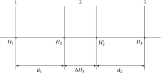
№ \(f'_1\), мм \(f'_2\), мм \(f'_3\), мм \(d_1\), мм \(d_2\), мм \(\Delta H_2\), мм 1 60 \(-40\) 30 35 40 10 2 70 \(-50\) 35 40 35 10
-
1.38. Лінза, розташована на оптичній лаві між лампочкою й екраном, дає на екрані різке збільшене зображення лампочки. Коли лампочку пересунули на \(\Delta = 40\) см ближче до екрана, на ньому з’явилося різке зменшене зображення лампочки. Визначити фокусну відстань \(f\) лінзи, якщо відстань \(l\) від лампочки до екрана дорівнює \(80\) см [відповідь]
-
1.39. Яка найменша можлива відстань \(l\) між предметом і його дійсним зображенням, створюваним збиральною лінзою, з головною фокусною відстанню \(f = 12\) см? [відповідь]
-
1.40. Людина рухається уздовж головної оптичної осі об’єктива фотоапарата зі швидкістю \(v = 5\) м/с. З якою швидкістю u необхідно переміщати матове скло фотоапарата, щоб зображення людини на ньому увесь час залишалося різким? Головна фокусна відстань \(f'\) об’єктива дорівнює \(20\) см. Обчислення виконати для випадку, коли людина перебуває на відстані \(a = 10\) м від фотоапарата. [відповідь]
-
1.41. Лінза виготовлена зі скла, показник заломлення якого для червоних променів \(n_\text {ч} = 1,50\), для фіолетових \(n_\text {ф} = 1,52\). Радіуси кривизни \(R\) обох поверхонь лінзи однакові й рівні \(1\) м. Визначити відстань \(\Delta f\) між фокусами лінзи для червоних і фіолетових променів. [відповідь]
-
1.42. Прозора сфера має однорідний показник заломлення n. Зображення віддаленого об’єкта лежить на дальній поверхні сфери. Чому дорівнює показник заломлення цієї сфери? [відповідь]
-
1.43. Визначити оптичну силу \(\Phi \) скляного меніска, якщо радіуси кривизни \(R_1\) і \(R_2\) його опуклої й увігнутої поверхонь рівні відповідно \(1\) м і \(40\) см. Меніском називають лінзу, обмежену двома сферичними поверхнями, що мають однаковий напрямок кривизни. [відповідь]
-
1.44. У лінзи, що перебуває в повітрі, фокусна відстань \(f_1 = 5\) см, а зануреної в розчин цукру \(f_2 = 35\) см. Визначити показник заломлення n розчину. [відповідь]
-
1.45. Дві однакові плоско-опуклі тонкі лінзи із показником заломлення n посріблені: одна з плоскої, друга з опуклої сторін. Знайти відношення фокусних відстаней \(f_1\) і \(f_2\) отриманих складних дзеркал, якщо світло в обох випадках падає на непосріблену поверхню. [відповідь]
-
1.46. Дві тонкі лінзи з фокусними відстанями \(f_1\) і \(f_2\) знаходяться на відстані \(l\) одна від одної та утворюють центровану систему. Визначити положення головних площин та фокусну відстань цієї системи. [відповідь]
-
1.48. З двох годинникових скелець з радіусами кривизни по \(0,5\) м склеїли повітряну лінзу і занурили її у воду. Знайти оптичну силу такої лінзи. [відповідь]
-
1.49. Плоско-опукла лінза має оптичну силу \(\Phi _1 = 4\) дптр. Опуклу поверхню лінзи посріблили. Знайти оптичну силу \(\Phi _1\) такого сферичного дзеркала. [відповідь]
-
1.50. У впукле сферичне дзеркало з радіусом кривизни \(R = 20\) см налили тонкий шар води. Визначити головну фокусну відстань \(f\) такої системи. [відповідь]
-
1.51. Людина без окулярів читає книгу, розташовуючи її перед собою на відстані \(a = 12,5\) см. Якої оптичної сили Ф окуляри вона потребує? [відповідь]
-
1.52. Межі акомодації ока короткозорої людини без окулярів лежать між \(a_1 = 16\) см і \(a_2 = 80\) см. В окулярах вона добре бачить віддалені предмети. На якій мінімальній відстані \(d\) вона може тримати книгу при читанні в окулярах? [відповідь]
-
1.53. Лупа дає збільшення \(\Gamma = 4\). Впритул до неї приклали збиральну лінзу з оптичною силою \(\Phi _1 = 8\) дптр. Яке збільшення \(\Gamma _2\) буде давати така складена лупа? [відповідь]
-
1.54. Плоска скляна пластина (\(n = 1,5\)) розглядається в мікроскоп. Спочатку мікроскоп встановлюють для спостереження верхньої поверхні пластинки, а потім зміщують тубус мікроскопа до тих пір, поки не буде чітко видно нижню поверхню пластини. (Для зручності спостереження на поверхнях пластини зроблено мітки). Зміщення тубуса \(2\) мм. Знайти товщину пластини \(d\). [відповідь]
-
1.55. Фокусна відстань \(f_1\) об’єктива мікроскопа дорівнює \(8\) мм, окуляра \(f_2 = 4\) см. Предмет перебуває на \(\Delta a = 0,5\) мм далі від об’єктива, ніж головний фокус. Визначити збільшення \(\Gamma \) мікроскопа. [відповідь]
-
1.56. Фокусна відстань \(f_1\) об’єктива мікроскопа дорівнює \(1\) см, окуляра \(f_2 = 2\) см. Відстань від об’єктива до окуляра \(L = 23\) см. Яке збільшення \(\Gamma \) дає мікроскоп? На якій відстані \(a\) від об’єктива перебуває предмет? [відповідь]
-
1.57. Відстань \(\Delta \) між фокусами об’єктива й окуляра всередині мікроскопа дорівнює \(16\) см. Фокусна відстань \(f_1\) об’єктива дорівнює \(1\) мм. З якою фокусною відстанню \(f_2\) варто взяти окуляр щоб одержати збільшення \(\Gamma = 500\)? [відповідь]
-
1.58. Оптична сила \(\Phi \) об’єктива телескопа дорівнює \(0,5\) дптр. Окуляр діє як лупа, що дає збільшення \(\Gamma _1 = 10\). Яке збільшення \(\Gamma _2\) дає телескоп? [відповідь]
-
1.59. При демонстрації кінофільму в сільському клубі, довжина кінозалу якого \(30\) м, через перегрівання апарату кінострічка деформувалась, і зображення різко погіршилось. Глядачі, які сиділи на відстані \(2\) м від екрану почали обурюватись. Знайти допустимий поздовжній вигин кінострічки в кадровому вікні проектора висотою \(18\) мм при проекції на екран висотою \(3,6\) м. Зображення створює об’єктив діаметром \(60\) мм. Кутова роздільна здатність ока \(1'\) (\(0,00029\) рад). [відповідь]
-
1.60. Чи може товста скляна лінза діяти як зорова труба? Розглянути варіанти побудови такої лінзи, обмеженої сферичними поверхнями з радіусами кривизни \(R_1\) та \(R_2\), для створення прямого та оберненого зображення? Якою при цьому має бути товщина таких лінз? Знайдіть відповідні збільшення. [відповідь]
-
1.61. При окулярі з фокусною відстанню \(f = 50\) мм телескоп дає кутове збільшення \(\Gamma _1 = 60\). Яке кутове збільшення \(\Gamma _2\) дасть один об’єктив, якщо забрати окуляр і розглядати дійсне зображення, створене об’єктивом, неозброєним оком з відстані найкращого зору? [відповідь]
-
1.62. Фокусна відстань \(f_1\) об’єктива телескопа дорівнює \(1\) м. У телескоп розглядається будинок, який перебуває на відстані \(a = 1\) км. У якому напрямку й на скільки потрібно пересунути окуляр, щоб одержати різке зображення у двох випадках: 1) якщо після будинку будуть розглядати Місяць; 2) якщо замість Місяця будуть розглядати близькі предмети, які перебувають на відстані \(a_1 = 100\) м? [відповідь]
-
1.63. Телескоп наведений на Сонце. Фокусна відстань \(f_1\) об’єктива телескопа дорівнює \(3\) м. Окуляр з фокусною відстанню \(f_2 = 50\) мм проектує дійсне зображення Сонця, створене об’єктивом, на екран, розташований на відстані \(b = 60\) см від окуляра. Площина екрана перпендикулярна до оптичної осі телескопа. Визначити лінійний діаметр d зображення Сонця на екрані, якщо видимий на небі неозброєним оком кутовий діаметр Сонця становить \(\alpha = 32'\). [відповідь]
-
1.64. З літака, який летить зі швидкістю \(v = 720\) км/год, фотографують місцевість. Фотоапарат має фокусну відстань \(50\) см. До якої висоти може знизитися літак, щоб при витримці фотоапарата \(\tau = 1/200\) с можна було проводити якісну аерофотозйомку, якщо допустима нерізкість зображення становить \(\delta = 0,2\) мм. [відповідь]
-
1.65. Робінзон опинився на безлюдному острові з багатою екзотичною флорою. Він помітив у вологій низині зарості бамбуку, а на схилах пагорбу знайшов каучукові дерева. Море викинуло на берег скриню — серед скарбів знайшлось і кілька годинників різного розміру. У Робінзона з’явилась мрія зробити зорову трубу, але як? Складіть для Робінзона інструкцію з виготовлення зорової труби зі схемою, враховуючи, що одне з годинникових скелець мало радіус кривизни 40 см, а інше — \(16\) см, а достатньої товщини бамбукові стебла були не довше одного метра. Яке збільшення дасть така примітивна труба? [відповідь]
-
1.66. Як в ясний сонячний день, маючи з собою скляну пляшку зі світлого тонкого скла, воду і рулетку, визначити показник заломлення води? [відповідь]